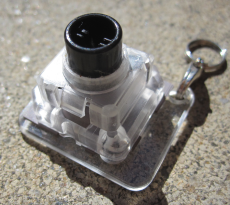

Topre sin "capacitive switch" bruker kapasitiv sensing for å føle når du trykker ned tasten. Tastene er heller ikke selvstendige, men del av et helt sett med en fast layout, så du kan ikke blande mellom Topre og de forskjellige andre mekaniske tastene.
De fleste tastatur med denne metoden har en aktiveringskraft på 45 centiNewton, men den kan endres med å bytte ut en fjær i selve bryteren, eller ved å bytte ut gummi-domen som beskytter fjæra.